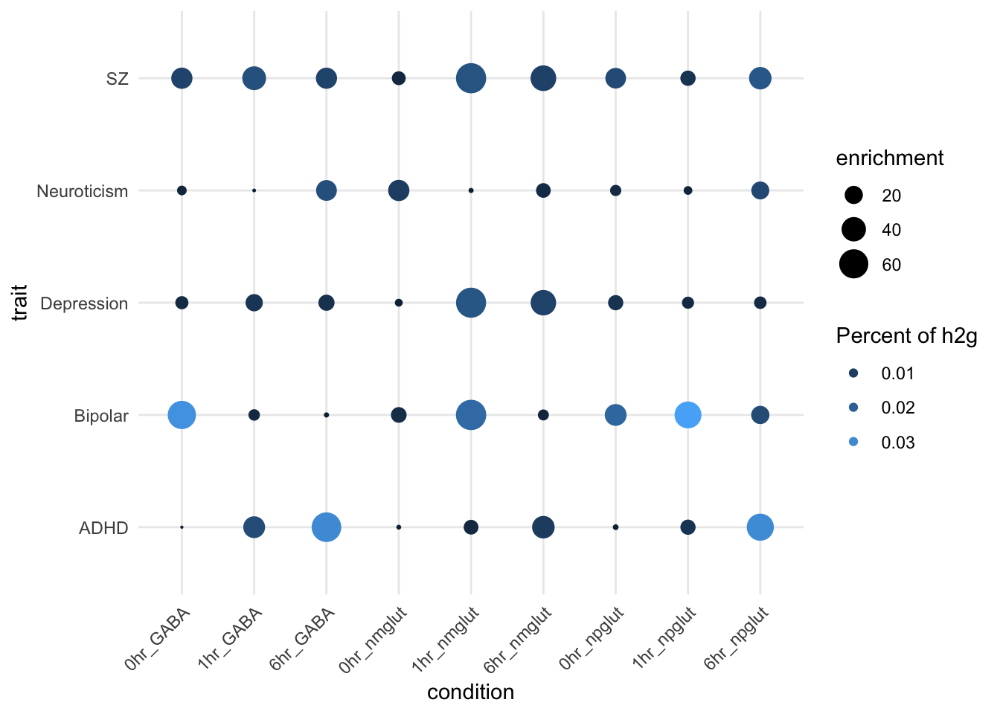
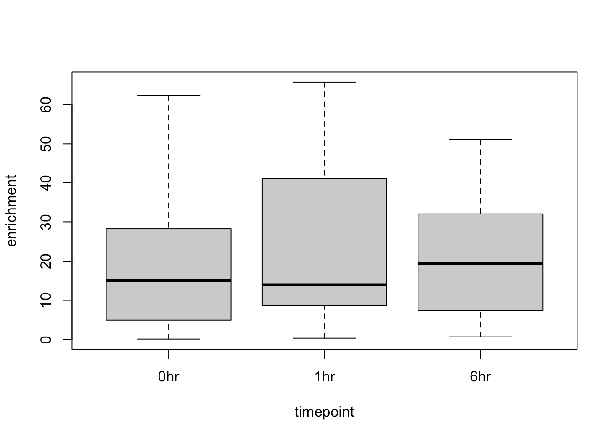
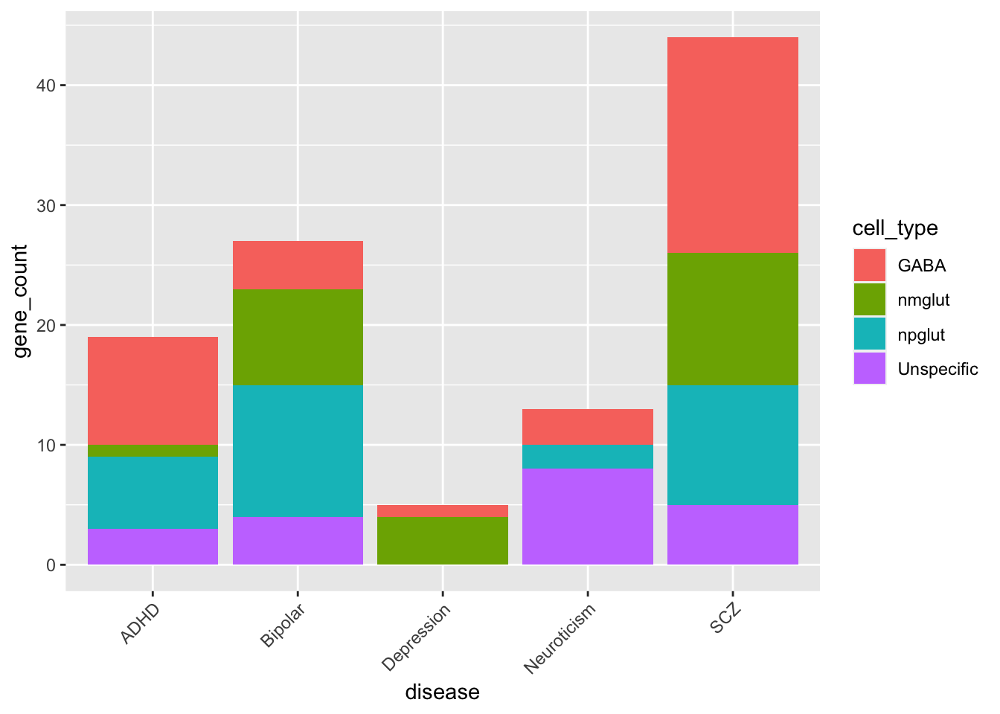
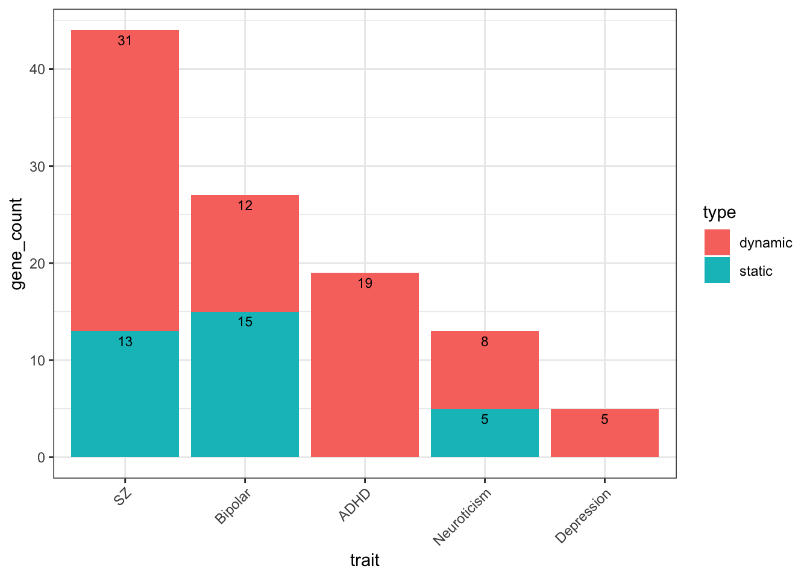
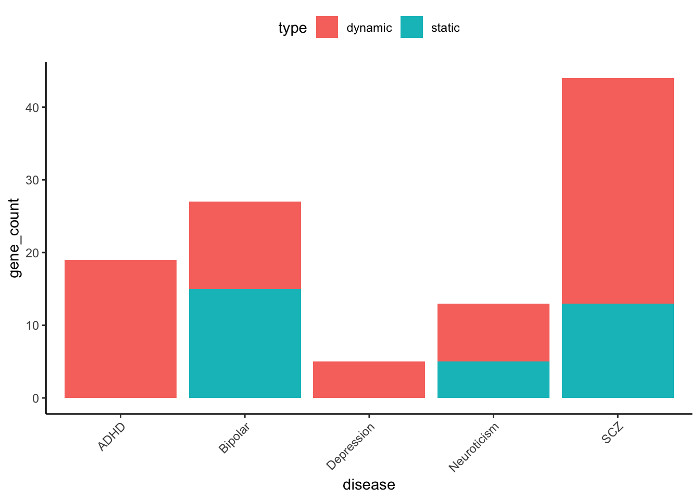
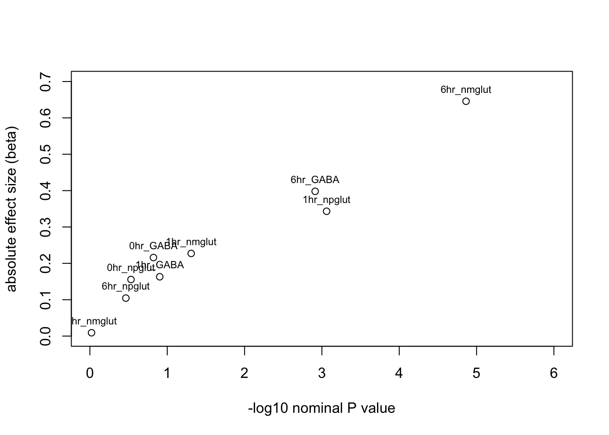
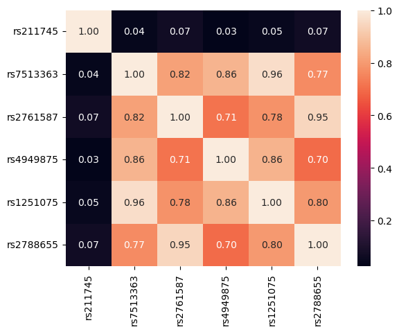

Aggregation of cTWAS results
Lifan Liang
2024-07-24
Last updated: 2025-12-09
Checks: 7 0
Knit directory: neuron_stim_eQTL100/
This reproducible R Markdown analysis was created with workflowr (version 1.7.2). The Checks tab describes the reproducibility checks that were applied when the results were created. The Past versions tab lists the development history.
Great! Since the R Markdown file has been committed to the Git repository, you know the exact version of the code that produced these results.
Great job! The global environment was empty. Objects defined in the global environment can affect the analysis in your R Markdown file in unknown ways. For reproduciblity it’s best to always run the code in an empty environment.
The command set.seed(20231109) was run prior to running
the code in the R Markdown file. Setting a seed ensures that any results
that rely on randomness, e.g. subsampling or permutations, are
reproducible.
Great job! Recording the operating system, R version, and package versions is critical for reproducibility.
Nice! There were no cached chunks for this analysis, so you can be confident that you successfully produced the results during this run.
Great job! Using relative paths to the files within your workflowr project makes it easier to run your code on other machines.
Great! You are using Git for version control. Tracking code development and connecting the code version to the results is critical for reproducibility.
The results in this page were generated with repository version 10addbf. See the Past versions tab to see a history of the changes made to the R Markdown and HTML files.
Note that you need to be careful to ensure that all relevant files for
the analysis have been committed to Git prior to generating the results
(you can use wflow_publish or
wflow_git_commit). workflowr only checks the R Markdown
file, but you know if there are other scripts or data files that it
depends on. Below is the status of the Git repository when the results
were generated:
Ignored files:
Ignored: .DS_Store
Ignored: .RData
Ignored: .Rhistory
Ignored: analysis/figure/
Ignored: data/.DS_Store
Ignored: data/single_group_ctwas/.DS_Store
Untracked files:
Untracked: Fig15SE_dynamic_count_eqtl_ctwas.pdf
Untracked: GTEx_vs_SCZ.pdf.2024-08-26_21-04-15.log
Untracked: GTEx_vs_SCZ.png
Untracked: GTEx_vs_SCZ.tiff
Untracked: GTEx_vs_SCZ.tiff.2024-08-26_21-04-43.log
Untracked: Rplot.png
Untracked: geneMapping.rds
Untracked: mouse_sesenory_experince_inh.csv
Untracked: mouse_sesenory_experince_inh.csv.numbers
Untracked: plot4pdf.R
Note that any generated files, e.g. HTML, png, CSS, etc., are not included in this status report because it is ok for generated content to have uncommitted changes.
These are the previous versions of the repository in which changes were
made to the R Markdown (analysis/aggregate_ctwas_res.Rmd)
and HTML (docs/aggregate_ctwas_res.html) files. If you’ve
configured a remote Git repository (see ?wflow_git_remote),
click on the hyperlinks in the table below to view the files as they
were in that past version.
| File | Version | Author | Date | Message |
|---|---|---|---|---|
| Rmd | 10addbf | Lifan Liang | 2025-12-09 | wflow_publish(c("analysis", "data")) |
| html | bcec945 | Lifan Liang | 2025-06-28 | Build site. |
| Rmd | 81ffbde | Lifan Liang | 2025-06-28 | wflow_publish(c("analysis", "data")) |
| html | ba6ddfe | Lifan Liang | 2024-12-09 | Build site. |
| Rmd | 8d6a383 | Lifan Liang | 2024-12-09 | wflow_publish(c("analysis", "docs")) |
| html | 904d944 | Lifan Liang | 2024-12-06 | Build site. |
| Rmd | 91abc48 | Lifan Liang | 2024-12-06 | wflow_publish(c("analysis", "docs")) |
| html | a4e0ba5 | Lifan Liang | 2024-12-05 | Build site. |
| Rmd | a04679d | Lifan Liang | 2024-12-05 | wflow_publish(c("analysis", "docs")) |
| html | 93fda5c | Lifan Liang | 2024-12-02 | Build site. |
| Rmd | 8b6a425 | Lifan Liang | 2024-12-02 | wflow_publish(c("analysis", "docs", "data")) |
| html | 16e2136 | Lifan Liang | 2024-11-14 | Build site. |
| Rmd | 454eba4 | Lifan Liang | 2024-11-14 | wflow_publish(c("docs", "data", "analysis")) |
| html | 6d4efe8 | Lifan Liang | 2024-09-25 | Build site. |
| Rmd | 4d20f38 | Lifan Liang | 2024-09-25 | wflow_publish(c("analysis", "docs")) |
| html | 4d20f38 | Lifan Liang | 2024-09-25 | wflow_publish(c("analysis", "docs")) |
| html | ef89bed | Lifan Liang | 2024-09-19 | Build site. |
| Rmd | c693b4c | Lifan Liang | 2024-09-19 | wflow_publish(c("analysis", "data", "docs")) |
| html | c693b4c | Lifan Liang | 2024-09-19 | wflow_publish(c("analysis", "data", "docs")) |
| html | 0b2f14d | Lifan Liang | 2024-08-23 | Build site. |
| Rmd | 5df41b0 | Lifan Liang | 2024-08-23 | wflow_publish(c("analysis", "docs")) |
| html | 5df41b0 | Lifan Liang | 2024-08-23 | wflow_publish(c("analysis", "docs")) |
| html | ccbf827 | Lifan Liang | 2024-08-16 | Build site. |
| Rmd | 574a14f | Lifan Liang | 2024-08-16 | wflow_publish(c("analysis", "data")) |
| html | 2f59d29 | Lifan Liang | 2024-08-16 | Build site. |
| Rmd | d064713 | Lifan Liang | 2024-08-16 | wflow_publish(c("analysis", "data")) |
| html | 6d74a64 | Lifan Liang | 2024-08-16 | Build site. |
| Rmd | c6dd077 | Lifan Liang | 2024-08-16 | wflow_publish(c("analysis", "data")) |
| html | c9bb44c | Lifan Liang | 2024-08-05 | Build site. |
| Rmd | 4f05c15 | Lifan Liang | 2024-08-05 | wflow_publish("analysis") |
| html | c255b08 | Lifan Liang | 2024-08-05 | Build site. |
| Rmd | 7d70d1a | Lifan Liang | 2024-08-05 | wflow_publish(c("analysis", "docs")) |
| html | 7d70d1a | Lifan Liang | 2024-08-05 | wflow_publish(c("analysis", "docs")) |
| html | 3242ba6 | Lifan Liang | 2024-07-26 | Build site. |
| Rmd | 0e6b329 | Lifan Liang | 2024-07-26 | wflow_publish(c("analysis", "data", "docs")) |
Introduction
Aggregate cTWAS results from NPD traits and investigate sharing
quartz_off_screen
2 
Time point distribution of enrichment
enrich1 <- as.data.frame(enrichment)
dat.tp <- data.frame(enrichment=c(unlist(enrich1[1:3,]),unlist(enrich1[4:6,]),unlist(enrich1[7:9,])), timepoint=c(rep("0hr",15), rep("1hr",15),rep("6hr",15)))
boxplot(enrichment~timepoint,dat.tp)
Cell type distribution of significant genes

Dynamic gene counts across cell types


Significant gene distribution across the five traits
Below is a heatmap of genes over PIP>50% in at least one trait. It shows not many shared genes among traits.
| Version | Author | Date |
|---|---|---|
| bcec945 | Lifan Liang | 2025-06-28 |
Attaching package: 'dplyr'The following objects are masked from 'package:stats':
filter, lagThe following objects are masked from 'package:base':
intersect, setdiff, setequal, unionEnrichment analysis
Three traits with PIP>0.8
Welcome to enrichR
Checking connections ... Enrichr ... Connection is Live!
FlyEnrichr ... Connection is Live!
WormEnrichr ... Connection is Live!
YeastEnrichr ... Connection is Live!
FishEnrichr ... Connection is Live!
OxEnrichr ... Connection is Live!Uploading data to Enrichr... Done.
Querying GO_Biological_Process_2023... Done.
Parsing results... Done.Three traits with PIP>0.8 and input eGene as background genes.
background <- readRDS("data/background_gene_ctwas.rds")
enrich.res <- enrichr(gene.univ, "GO_Biological_Process_2023",background = background)Uploading data to Speedrichr...
- Your gene set... Done.
- Your background... Done.
Getting enrichment results...
- GO_Biological_Process_2023... Done.
Parsing results... Done.head(enrich.res$GO_Biological_Process_2023[-c(5,6,8)],10) %>%
DT::datatable() %>%
DT::formatRound(columns=c('P.value', 'Adjusted.P.value'), digits=3)Three traits with PIP>0.5
Uploading data to Enrichr... Done.
Querying GO_Biological_Process_2023... Done.
Parsing results... Done.Five traits with PIP>0.8
Uploading data to Enrichr... Done.
Querying GO_Biological_Process_2023... Done.
Parsing results... Done.Five traits with PIP>0.5
Uploading data to Enrichr... Done.
Querying GO_Biological_Process_2023... Done.
Parsing results... Done.Analysis of three genes enriched in lipid metabolism
CPT1C
CPT1C was a top gene in SCZ with a high PIP in 1hr_NMglut.
The SNP related to CPT1C in 1 hour NMglut was 50K bps away from the other two SNPs. Looking into this gene-SNP pair, 1hr_nmglut is the only condition with FDR < 0.1.

The SNP, rs12104272, has a nominal P value around \(10^{-8}\) in SCZ GWAS. It was mapped to SCAF1 in (another study)[https://pubmed.ncbi.nlm.nih.gov/31740837/]. However, in our dataset, this gene-SNP pair was not significant in any conditions.
eQTL plots

LD across top eQTLs input
CROT
CROT has PIP=0.87 in SCZ.The corresponding SNP was rs13233308

eQTL plots
LD across top eQTLs input
ACADM
ACADM has PIP=0.61 in 6 hour NMglut for the trait

eQTL plots
LD across top eQTLs input

sessionInfo()R version 4.1.2 (2021-11-01)
Platform: x86_64-apple-darwin17.0 (64-bit)
Running under: macOS Big Sur 10.16
Matrix products: default
BLAS: /Library/Frameworks/R.framework/Versions/4.1/Resources/lib/libRblas.0.dylib
LAPACK: /Library/Frameworks/R.framework/Versions/4.1/Resources/lib/libRlapack.dylib
locale:
[1] en_US.UTF-8/en_US.UTF-8/en_US.UTF-8/C/en_US.UTF-8/en_US.UTF-8
attached base packages:
[1] stats graphics grDevices utils datasets methods base
other attached packages:
[1] enrichR_3.4 dplyr_1.1.2 pheatmap_1.0.13 ggplot2_4.0.1
[5] workflowr_1.7.2
loaded via a namespace (and not attached):
[1] tidyselect_1.2.1 xfun_0.54 bslib_0.3.1 vctrs_0.6.5
[5] generics_0.1.4 htmltools_0.5.9 yaml_2.3.11 rlang_1.1.6
[9] jquerylib_0.1.4 later_1.3.1 pillar_1.11.1 glue_1.8.0
[13] withr_3.0.2 RColorBrewer_1.1-3 S7_0.2.1 lifecycle_1.0.4
[17] stringr_1.6.0 gtable_0.3.6 ragg_1.2.5 htmlwidgets_1.6.4
[21] evaluate_1.0.5 WriteXLS_6.8.0 labeling_0.4.3 knitr_1.50
[25] callr_3.7.6 fastmap_1.1.1 crosstalk_1.2.2 httpuv_1.6.10
[29] ps_1.9.1 curl_7.0.0 Rcpp_1.0.10 DT_0.34.0
[33] promises_1.5.0 scales_1.4.0 jsonlite_2.0.0 farver_2.1.1
[37] otel_0.2.0 fs_1.6.2 systemfonts_1.0.4 textshaping_0.3.6
[41] rjson_0.2.21 digest_0.6.31 stringi_1.7.12 processx_3.8.6
[45] getPass_0.2-4 rprojroot_2.1.1 grid_4.1.2 cowplot_1.2.0
[49] cli_3.6.5 tools_4.1.2 magrittr_2.0.4 sass_0.4.6
[53] tibble_3.3.0 dichromat_2.0-0.1 whisker_0.4.1 pkgconfig_2.0.3
[57] rmarkdown_2.30 httr_1.4.7 rstudioapi_0.17.1 R6_2.6.1
[61] git2r_0.32.0 compiler_4.1.2